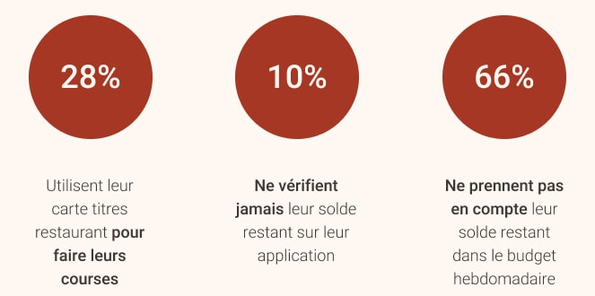
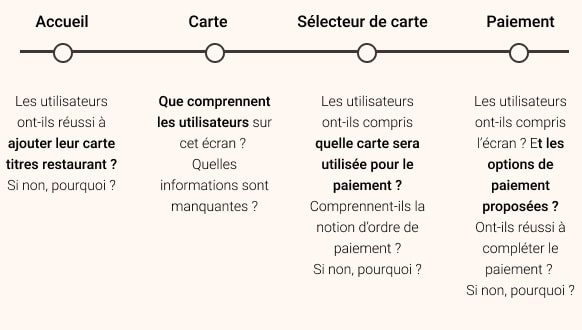

Contexte
Pour l'un des premiers projets que j'ai entrepris dans le cadre de mon expérience chez Lyf Pay, j'ai assisté à l'intégration d'un nouveau mode de paiement au sein de l'app : la carte titres restaurant.
L'objectif de ce projet était simple : mettre en place une fonctionnalité permettant aux utilisateurs de payer avec l'application en utilisant leur carte ticket-restaurant seule ou combinée avec une autre carte de paiement.
Rôle : Réalisation de l'ensemble de la recherche utilisateur,
travaillant en étroite collaboration avec Anne-Laure Donzé (Product Owner) & Naama Bassan (Design Lead)
Méthodologie : Questionnaire, prototypage, test utilisateurs, test guerilla
Outils : Google Forms, Typeform, Figma, Marvel, Notion
Durée : Environ 4 mois
Compréhension du sujet
Pour comprendre le contexte,
il faut identifier les points bloquants liés à la carte titres restaurant
:
• Tout d'abord, vous pouvez utiliser la carte en paiement sans-contact ou avec un code, qui vous est fourni par une application externe,
qui peut ne pas avoir été correctement configurée en amont. (Point bloquant n°1)
• Sur cette carte, vous recevez une indemnité de repas mensuelle, dont le solde dépend de votre contrat de travail.
Pour savoir combien d'argent il vous reste chaque jour/mois,
vous devez vérifier l'application externe mentionnée plus haut (Point bloquant n°2)
• Vous ne pouvez utiliser cette carte que pour acheter de la nourriture. Par conséquent, la plupart des restaurants l'accepteront,
et certains supermarchés aussi, mais vous ne pouvez pas savoir à l'avance lesquels. (Point bloquant n°3)
• Vous pouvez utiliser cette carte pour 19€ maximum par jour,
mais elle ne fonctionne pas les dimanches et jours fériés, car vous êtes censé l'utiliser les jours ouvrables. (Point bloquant n°4)
Il y a beaucoup de choses à prendre en compte à propos de cette fameuse carte, donc je voulais savoir dès le début comment les gens l'utilisaient. lors j'ai fait la seule chose logique et j'ai demandé aux gens. Comment ? En réalisant une enquête auprès de mes propres collègues.
Sondage auprès de collaborateurs
Yes, I did primary research
on my very own colleagues and not the final users.
Oui, j'ai fait de la recherche utilisateur sur mes propres collègues et non sur les utilisateurs finaux.
Mais pourquoi donc ?
Principalement parce que
je n'ai pas posé de questions sur une interface en particulier, mais sur les habitudes
d'utilisation d'un produit, que nous utilisions réellement. Donc, d'une certaine manière, mes collègues étaient
des utilisateurs finaux.
De cette manière, j'ai obtenu plus de 50 réponses en moins de deux jours,
ce qui m'a permis de commencer et de recueillir des retours immédiatement.
Je le referais certainement de la même manière si c'était à refaire ! J'avais quelques hypothèses :
• Les testeurs utilisaient surtout leur carte pour leur déjeuner quotidien, et peu pour faire lers courses.
• Les testeurs n'utilisaient pas souvent l'application externe liée à leur carte, et donc ils ne vérifiaient pas souvent leur solde restant.
• La carte titres restaurant n'était pas considérée comme faisant partie du compte bancaire
et n'est pas comptabilisée en tant que tel dans le budget des gens.
Voilà un résumé de ce que j'ai découvert :

Ces données nous indiquent qu'il y a des points bloquants potentiels dans la vérification du solde restant, et que donc notre application pourrait être utile !
Elles montrent également que
les paiements devraient être présentés différemment selon le type carte utilisée pour coller au plus près des modèles mentaux sous-jacents,
car la prise en compte du budget n'a pas été conceptualisée de la même manière pour toutes les cartes bancaires.
Avec tout cela à l'esprit, nous pouvons commencer à imaginer ce que serait une expérience agréable pour les utilisateurs de Lyf Pay.
J'ai donc poursuivi mon étude, j'ai fait quelques prototypes rapides et j'ai réalisé une première session de tests d'utilisateurs sur le sujet.
Tests en Guerilla
Pour cette session, je suis passé en guerilla surtout parce que je n'avais pas un flux d'utilisateurs complet à tester, mais seulement quelques écrans et que j'avais besoin d'avoir des idées rapidement pour avancer dans le projet.


Avec le recul, je réalise aussi que j'étais particulièrement enclin à essayer le guerilla testing, parce que je n'en avais jamais fait auparavant ! Cela ne fait-il pas partie du travail d'UX aussi d'essayer de nouvelles méthodologies tout en faisant de la recherche ?
De plus, les tests en présentiel peuvent prendre une à deux semaines entre la planification et la réalisation, alors qu'une session guerilla peut être faite dans la journée. Le principal inconvénient est qu'il n'y a AUCUN moyen de savoir si les gens sont des utilisateurs de cartes titres restaurant, ou même s'ils connaissent le concept.
J'ai eu mes 5 participants après seulement une heure de test, et c'était suffisant pour avoir déjà beaucoup de choses à améliorer avant la prochaine série de tests.
Le guerilla testing est excellent pour évaluer la compréhension de base d'un écran. Même si vos testeurs ne connaissent pas un concept ou une fonctionnalité, ils essaieront forcément de s'en faire une idée et pourront au moins toujours faire des suppositions assez précises sur un sujet même s'ils n'en ont pas entendu parler. Il peut donc être utile de recourir à du test utilisateurs guerilla si vos ressources sont limitées, avant de procéder à une série de tests plus approfondis avec vos utilisateurs finaux.
Itération des tests utilisateurs
Lorsque les écrans ont été plus peaufinés, nous avons pu faire des tests sur l'ensemble des parcours utilisateurs, de l'inscription à la fin. C'est à ce moment-là que j'ai fait un recrutement approprié, en recherchant spécifiquement des personnes utilisant la carte titres restaurant et qui ne connaissaient pas notre application.

Et après plusieurs séries de tests avec une dizaine participants, voilà ce que j'ai obtenu :
•
La plupart des utilisateurs pouvaient intuitivement ajouter leur carte dans l'application,
et les informations affichées sur les différents écrans étaient facilement compréhensibles.
•
L'écran de paiement et la fonctionnalité de "multi-paiement" étaient facilement compréhensibles,
mais quelques améliorations ont pu être apportées au sélecteur de carte.
•
Les messages d'erreur pourraient être améliorés
et l'envoi de notifications spécifiques à l'utilisation de la carte pourrait améliorer l'expérience.
•
L'expérience a été globalement satisfaisante et les participants étaient impatients d'essayer la fonctionnalité, ce qui est toujours un bon signe !

Conclusion
Dans l'ensemble, ce projet a été une belle expérience, car il m'a permis de mettre en place la bonne méthodologie au bon moment du projet et de définir les questions nécessaires. Ca aurait également été très gratifiant d'être impliqué dès les premières phases de recherche et de participer à l'élaboration de la solution.
Ce que j'ai particulièrement apprécié, c'est d'avoir pu essayé différentes méthodologies, en partant d'un questionnaire pour mieux comprendre les modèles mentaux que nous n'aurions peut-être pas découverts, et de concevoir des écrans basés sur ces modèles. Ensuite, le fait de tester des prototypes avec deux types de tests utilisateurs nous a permis de mieux comprendre le contexte dans lequel nous nous trouvions et nous a aidé à façonner cette fonctionnalité telle qu'elle est aujourd'hui. :)
Merci pour la lecture ! Vous voulez lire ce cas ? 🛠️ //A CHANGER//